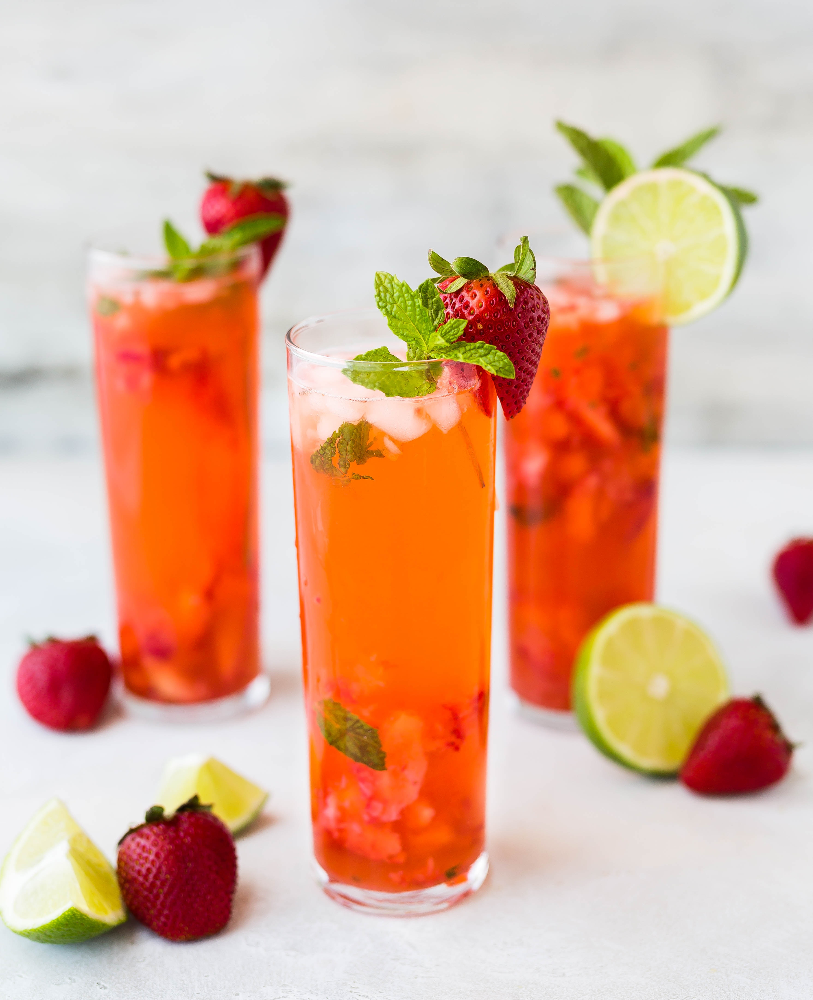

Staple Food
俗话说：民以食为天。北方面食，南方米饭。
Staple food is the main food that traditionally served on the table, and the main source of energy required.As the staple food is carbohydrates, especially the main source for the intake of starch, therefore with starch as the main component of rice, wheat, corn and other cereals, and potato, sweet potato tuber foods are different regions as a staple food.Generally speaking, the staple food contains many carbohydrates.

海鲜烩饭是西班牙菜肴，它具有独特的风味，它融合了地中海和东方烹饪的精华，堪称西餐中一绝。
Drink
矿泉水、牛奶、玫瑰花茶、鲜果汁、蔬菜汁、咖啡、奶茶、红酒、鸡尾酒......
养颜又养眼的混合果汁
Fruits
Apple、 Banana、 Grapes、 Kiwi fruit、 Orange、 Blueberry ......

可爱的水果拼盘Salad